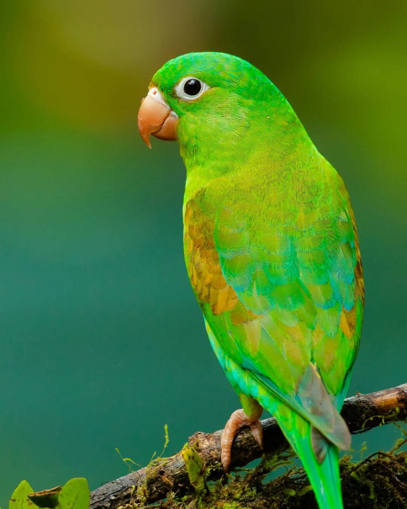
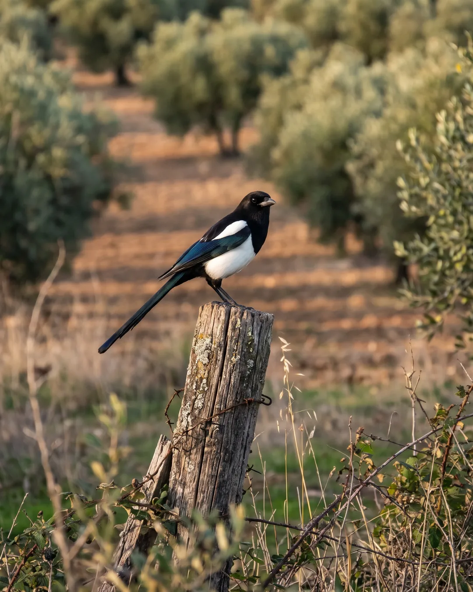

Case #15 · Birds
About this case
Case #15 is closed. It was the daily case for November 15, 2026 and its theme was Birds. The detectives of that day had two challenges: five images to judge as real photographs or AI-made pictures, and five one-sentence claims to judge as facts or fakes.
- AI-generated images: 4 of 5
- Fake claims: 2 of 5
Below you will find every answer. Each AI-generated image comes with the prompt that produced it, and each claim with the truth behind it and the details worth remembering, so you can check what you missed.
One of the fakes: “Some bird species change their eye color depending on the weather.” The truth: No bird changes its iris color because of cold, heat or rain.
Want to sharpen your eye? Read our guide to spotting AI images or our guide to spotting fake news, then play today's case.
Images
-
Image 1

AI
The suspect's confession
A grey heron standing on the bank of a shallow river, with slightly murky water and dry reeds around it; overcast morning light, telephoto lens, muted colors.
-
Image 2

AI
The suspect's confession
A common kestrel in flight over a harvested grain field, captured at a high shutter speed; slight softness at the wingtips and a pale gray sky.
-
Image 3

REAL
Real photograph
-
Image 4

AI
The suspect's confession
A magpie on a wooden fence post in the countryside, body in profile and head turned; side light in the late afternoon, black feathers with subtle bluish sheen and a blurred olive grove background.
-
Image 5

AI
The suspect's confession
A robin perched on a low branch of a bush in winter, photographed with a 400 mm telephoto lens at f/5.6; detailed feathers, blurred brown background and a small twig crossing in front.
Fact or Fake
-
Claim 1
FACT “Some birds of prey deliberately spread wildfires.”
In Australia, black kites, whistling kites and brown falcons carry burning sticks to start new fires.
- They drop the sticks on unburnt dry grass to flush out small animals.
- Aboriginal communities and scientists call them “fire hawks.”
-
Claim 2
FACT “The longest nonstop flight on record is 13,560 km (8,430 mi) without stopping.”
A young bar-tailed godwit flew 13,560 km (8,430 mi) from Alaska to Tasmania in October 2022 without landing.
- It flew 11 days and 11 nights over the Pacific without eating or drinking.
- The bird wore a satellite transmitter, which recorded the whole trip.
-
Claim 3
FAKE “Some bird species change their eye color depending on the weather.”
No bird changes its iris color because of cold, heat or rain.
- In many species, eye color changes as the bird gets older.
- Emotion or courtship can briefly change how intense the color looks.
-
Claim 4
FACT “The peregrine falcon can reach 350 km/h (217 mph) in a dive.”
It can even exceed that: it is the fastest animal on Earth, with dives above 389 km/h (242 mph).
- The dive is called a stoop.
- It tucks its wings in to take a perfectly aerodynamic shape.
-
Claim 5
FAKE “A hidden eagle can be spotted in the design of the Statue of Liberty.”
The Statue of Liberty has no hidden eagle or any other animal in its design.
- She holds a torch and a tablet with the date of American independence.
- Her crown has seven rays and broken chains lie at her feet.